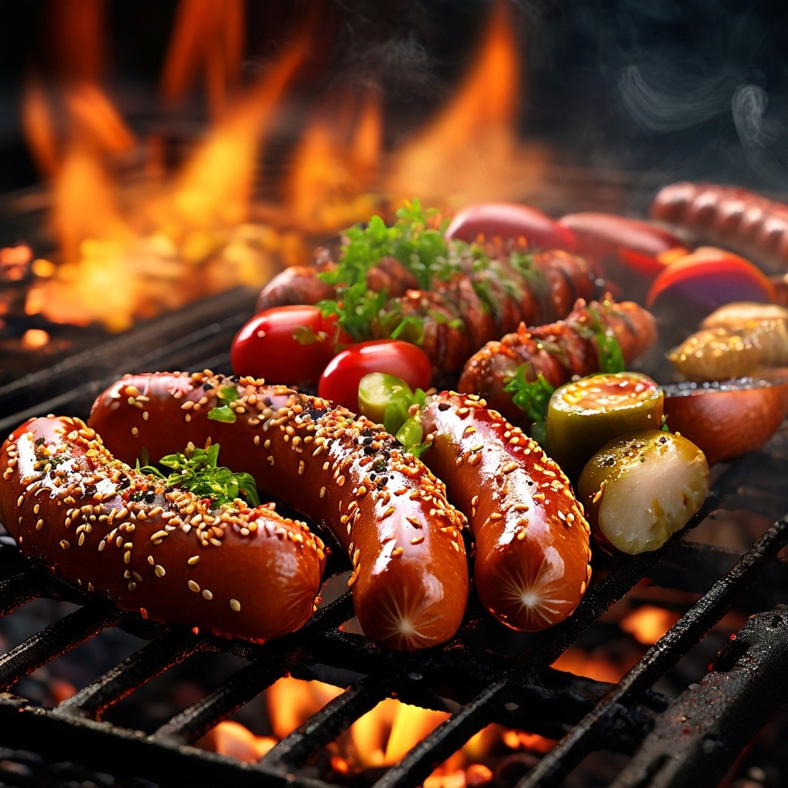

Kohle- und Gasgrills unterscheiden sich hauptsächlich in der Art der Energiequelle und der Grilltechnik. Kohlegrills verwenden Holzkohle als Brennstoff, was zu einem charakteristischen rauchigen Geschmack führt und oft als traditioneller empfunden wird. Sie benötigen jedoch mehr Zeit zum Vorheizen und erfordern eine sorgfältige Handhabung der Kohle. Gasgrills hingegen nutzen Propan- oder Erdgas, was eine schnellere und einfachere Temperaturregelung ermöglicht. Sie sind in der Regel einfacher zu bedienen und schneller einsatzbereit, bieten jedoch nicht den gleichen rauchigen Geschmack wie Kohlegrills. Beide Grillarten haben ihre Vorzüge, je nach persönlichen Vorlieben und Grillgewohnheiten.
